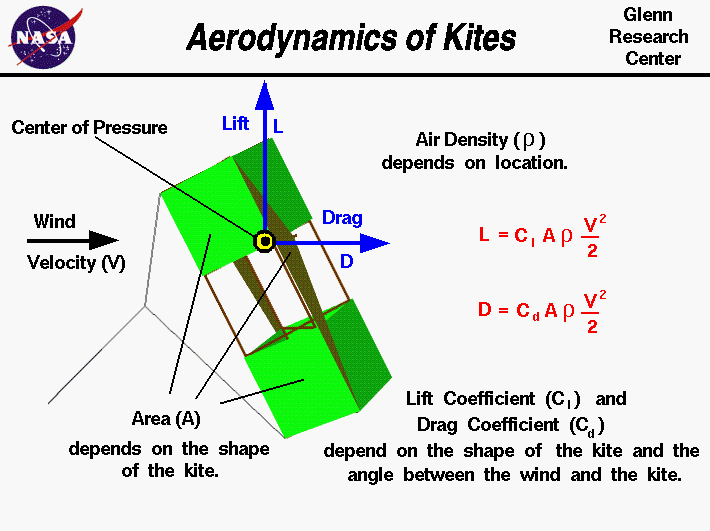

|

An excellent way for students to gain a feel for
aerodynamic forces
is to fly a
kite.
Kites
fly
because of forces acting on the
parts
of the kite.
Though kites come in many
shapes and sizes, the
forces which act on the kite are
the same for all kites.
You can compare these forces to the
forces that act on an airliner in
flight and you will find that, replacing the
thrust with the
tension in the line,
they are exactly the same.
The similarity in forces allowed the
Wright brothers
to test their theories of flight by flying their
aircraft
as
kites from 1900 to 1902.
On this slide we show the aerodynamic equations which would describe the
motion of a flying kite. The graphic shows a side view of the
flying kite with the aerodynamic
lift and
drag
shown by the blue
vectors.
The wind is blowing parallel to the ground.
The drag is in the direction of the wind, while the lift is
perpendicular to the wind. Both aerodynamic forces act through the
center of pressure,
the black and yellow dot on the kite.
Since the forces on a kite are the same as the forces on an airplane,
we can use the mathematical equations developed to predict airplane
performance to predict the aerodynamic performance of a kite.
In particular, the
lift equation and the
drag equation, shown on the upper right side of the
slide, have been developed to determine the magnitude of the
aircraft forces.
The lift L is equal to a lift coefficient Cl times the
projected surface area A times the air density r times one
half the square of the wind velocity V.
L = Cl * A * r * .5 * V^2
Similarly, the drag D is equal to a drag coefficient Cd times the
projected surface area A times the air density r times one
half the square of the wind velocity V.
D = Cd * A * r * .5 * V^2
The magnitude of these forces depend on the
lift coefficient, Cl, and the
drag coefficient, Cd, which depend on geometric
properties of the kite and the angle between the kite surfaces and the wind.
The coefficients are usually determined experimentally for aircraft.
But the aerodynamic surfaces for most kites are simple, thin, flat
plates. So we can use some experimental values of the lift and drag
coefficients for flat plates to get a first order idea of our kite performance.
The values of these coefficients are given on separate slides for
lift and
drag.
The aerodynamic forces on your kite depend directly on the surface
area of the kite.
You first learn how to compute the
area
for a geometric shape while you
are in middle school. The surface area depends on the particular
design of your kite.
The aerodynamic forces also depend on the air velocity and density. In general,
the density depends on your location on the earth. The higher the elevation,
the lower the density.
The standard
value for air density r at sea level conditions is given as:
r = 1.229 kg/m^3 or .00237 slug/ft^3.
The variation with altitude is described on a separate
page.
The air velocity is the
relative
speed between the kite and the air. Since the kite is held fixed
by the control line, this reduces to the wind speed.
The aerodynamic forces change with the
square
of the velocity.
The mathematical equations involved with the
forces and
torques
on a kite can be solved
by using a computer program. You can use the
KiteModeler program to further study how kites work
and to design your own kites.
Activities:
Guided Tours
-
 Forces on a Kite
Forces on a Kite

-
KiteModeler
Navigation ..


- Beginner's Guide Home Page
|